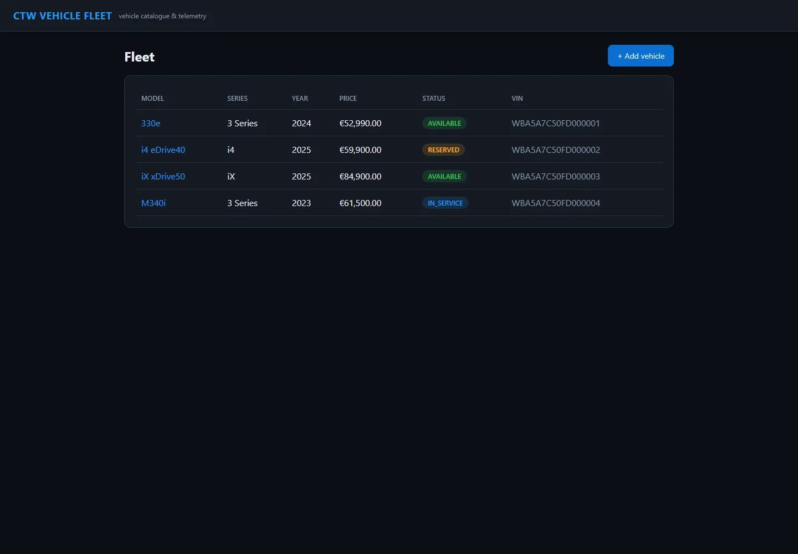

Featured project · Runtime screenshot
CTW Vehicle Fleet
A vehicle catalogue and stored telemetry reference app with two persistence models.
Local demonstration · Static runtime preview
View GitHub source
Problem
Vehicle master data and timestamped telemetry require distinct storage and clear validation feedback.
Architecture
Angular calls a layered Spring Boot API; Flyway manages PostgreSQL vehicle records and MongoDB stores timestamped telemetry. nginx proxies the integrated Docker environment.
Engineering decisions
- Use DTOs and service boundaries rather than exposing persistence entities.
- Validate VIN uniqueness, numeric precision and missing measurements.
- Distinguish an empty telemetry result from a failed request.
Implemented workflow
- Create, inspect, edit and delete vehicles with structured conflict errors.
- Read the latest stored telemetry; API endpoints expose ordered history.
Verified result
24 backend tests plus browser CRUD, mobile, API and restart-persistence checks passed.
- Verification describes the prepared local checkout on 28–29 October 2026; it is not a production or business outcome claim.
- Prepared improvements have not been pushed; the public repository may differ from this runtime preview.
Scope and next steps
- Independent reference app; no company, client or employment affiliation is claimed.
- No authentication, streaming or sensor integration; history is unpaginated and telemetry remains after vehicle deletion.
- Local demo only. Preparation audit reported 55 npm advisories, including two critical build dependencies; remediation remains.
Technology
Angular · TypeScript · Java 21 · Spring Boot · PostgreSQL · MongoDB · Docker
Preview availability
Static runtime preview. No hosted interactive demo is available. The prepared improvements were verified in a local checkout and have not been pushed to GitHub; public source may differ from these captures. Use the repository documentation for the public version's setup requirements.
← Return to portfolio